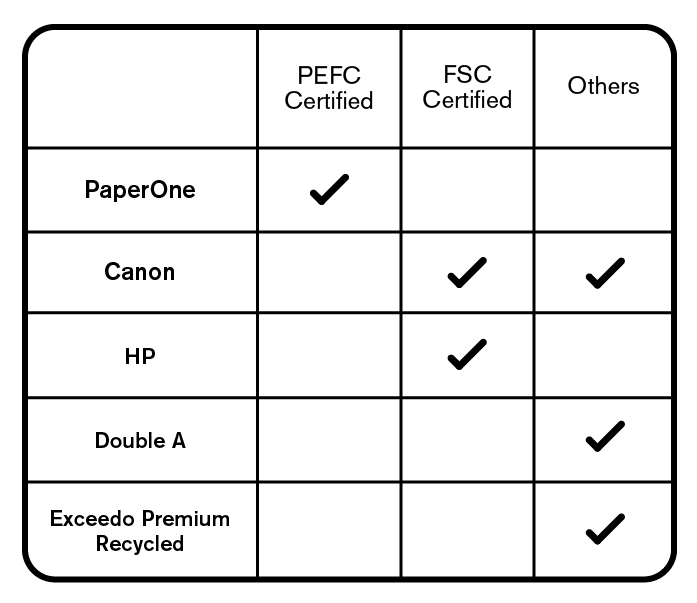
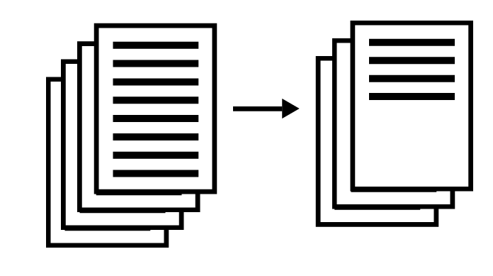

Tips
#1 Evaluate and Remind
If you’re fine with submissions printed duplex (double-sided) or printed on recycled paper, make sure your students know! Include it in your syllabus. Reminding them in class
won’t hurt too!
#2 Choose Eco-friendly Paper
Vote for sustainable paper products with your purchases!
Check the label! Look for PEFC Certified or FSC Certified products. Products with these certification mean they are sustainably sourced and produced. They may be a little pricier but by purchasing them, we vote for sustainable products and for companies that take care of the environment.

Suggested Format
There are certain fonts that save paper and ink. Here’s a format you can try out that reduces ink usage as well as paper usage while maintaining enough space for comments and corrections.
Garamond, 12 points, 1.5 spacing, 1” margins left and right, 0.8” margins top and bottom
This format reduces a 4-page MLA-formatted document to just 2 and a half pages. Both documents do not include bibliography.

Digital Platforms
There are also a lot of platforms available on the Internet for free that you can use to manage your classes to receive submissions like papers and homework.
Here are three platforms used and recommended by your fellow faculty members.
E-mail
It's simple and easy! You only need to ask your students to send in their papers through your e-mail. Usually paired with Microsoft Word (.docx submission) to allow for digital comments. However, since it is not a classroom management application (like the ones below), it is limited to receiving and returning papers only.
Tips! Use your OBF account. Standardize your subject header to include class code, section, name of requirement and student’s ID number to help with sorting and checking.
Schoology
Easy to use once you are familiar with the application and its functions. One of its highlights is that it offers a wide variety of functions: submissions, online quizzes, online discussions. Grades can also be automatically calculated through Schoology!
Edmodo
Similar to Schoology, Edmodo takes some time to get used to. But once you've explored and are familiar with it, there are a lot of things you can do with Edmodo! Like Schoology, Edmodo also offers a wide variety of functions: submissions, online quizzes, online discussions. Grades can also be automatically calculated through Edmodo!